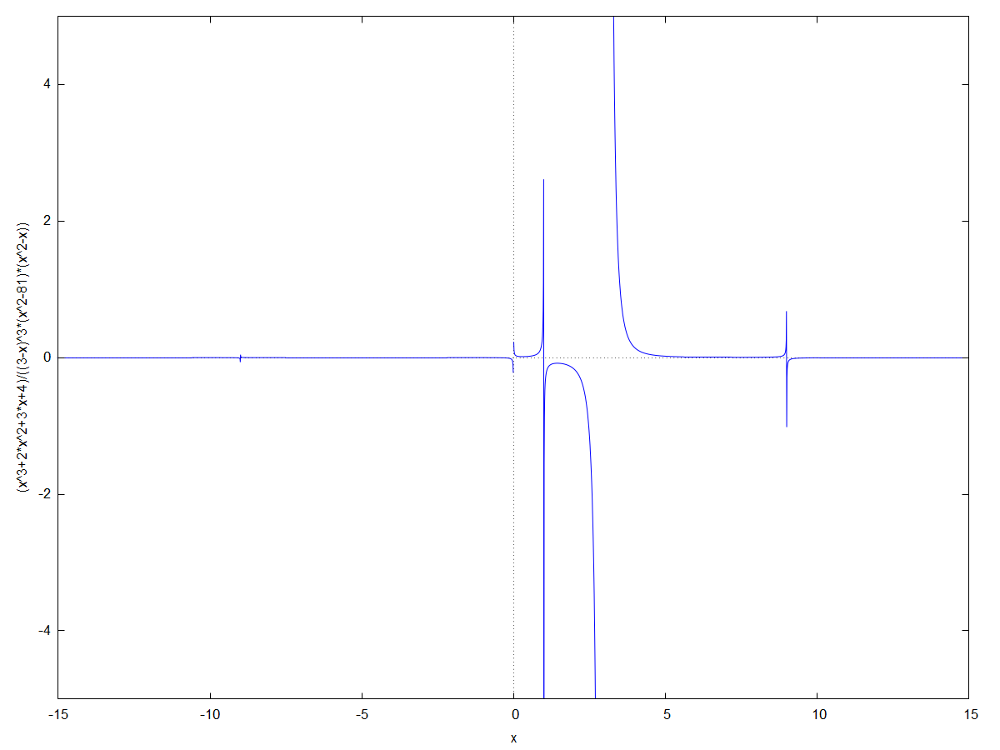

\( \DeclareMathOperator{\abs}{abs} \newcommand{\ensuremath}[1]{\mbox{$#1$}} \)
| --> | ( x ^ 3 + 2 · x ^ 2 + 3 · x + 4 ) / ( ( x ^ 2 − x ) · ( 3 − x ) ^ 3 · ( x ^ 2 − 81 ) ) ; |
\[\operatorname{ }\frac{{{x}^{3}}+2 {{x}^{2}}+3 x+4}{{{\left( 3-x\right) }^{3}} \left( {{x}^{2}}-81\right) \, \left( {{x}^{2}}-x\right) }\]
| --> | wxplot2d ( [ ( x ^ 3 + 2 · x ^ 2 + 3 · x + 4 ) / ( ( x ^ 2 − x ) · ( 3 − x ) ^ 3 · ( x ^ 2 − 81 ) ) ] , [ x , − 15 , 15 ] , [ y , − 5 , 5 ] ) $ |
\[\operatorname{ }\]
| --> | solve ( [ ( x ^ 3 + 2 · x ^ 2 + 3 · x + 4 ) / ( ( 3 − x ) ^ 3 · ( x ^ 2 − 81 ) · ( x ^ 2 − x ) ) ] , [ x ] ) ; |
\[\operatorname{ }\operatorname{[}x=-\frac{5 \left( \frac{\sqrt{3} \% i}{2}+\frac{-1}{2}\right) }{9 {{\left( \frac{5 \sqrt{2}}{{{3}^{\frac{3}{2}}}}-\frac{35}{27}\right) }^{\frac{1}{3}}}}+{{\left( \frac{5 \sqrt{2}}{{{3}^{\frac{3}{2}}}}-\frac{35}{27}\right) }^{\frac{1}{3}}} \left( \frac{-1}{2}-\frac{\sqrt{3} \% i}{2}\right) -\frac{2}{3}\operatorname{,}x={{\left( \frac{5 \sqrt{2}}{{{3}^{\frac{3}{2}}}}-\frac{35}{27}\right) }^{\frac{1}{3}}} \left( \frac{\sqrt{3} \% i}{2}+\frac{-1}{2}\right) -\frac{5 \left( \frac{-1}{2}-\frac{\sqrt{3} \% i}{2}\right) }{9 {{\left( \frac{5 \sqrt{2}}{{{3}^{\frac{3}{2}}}}-\frac{35}{27}\right) }^{\frac{1}{3}}}}-\frac{2}{3}\operatorname{,}x={{\left( \frac{5 \sqrt{2}}{{{3}^{\frac{3}{2}}}}-\frac{35}{27}\right) }^{\frac{1}{3}}}-\frac{5}{9 {{\left( \frac{5 \sqrt{2}}{{{3}^{\frac{3}{2}}}}-\frac{35}{27}\right) }^{\frac{1}{3}}}}-\frac{2}{3}\operatorname{] }\]\